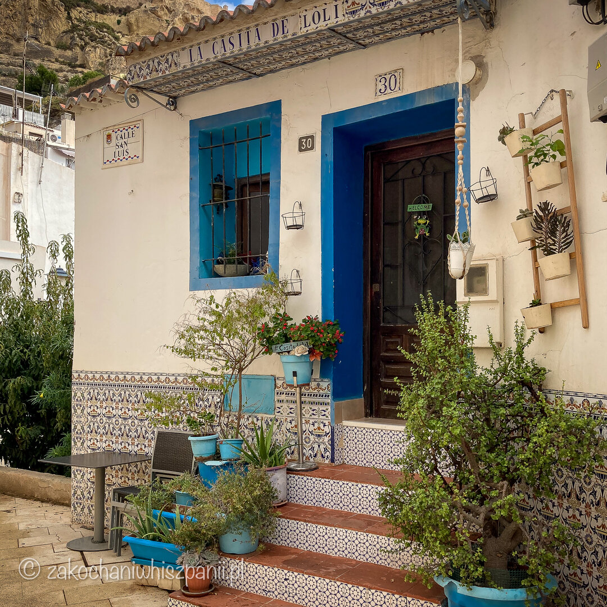
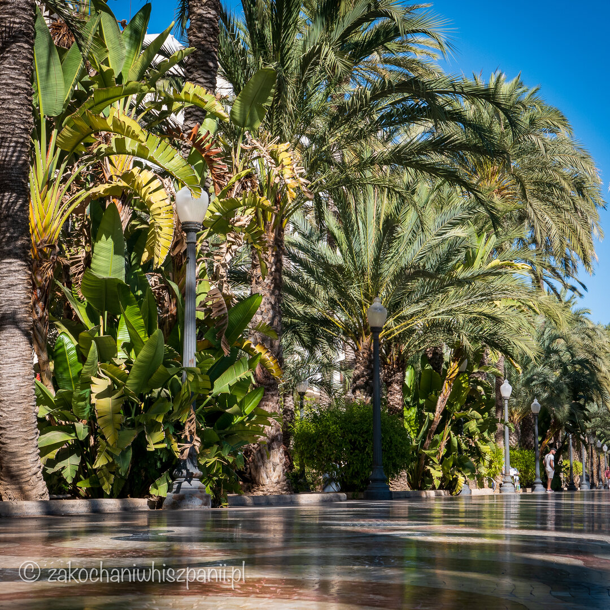
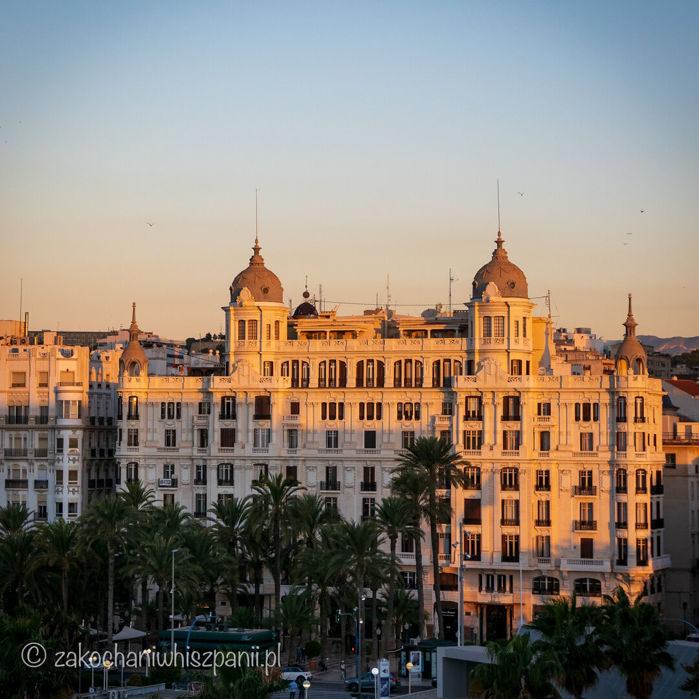
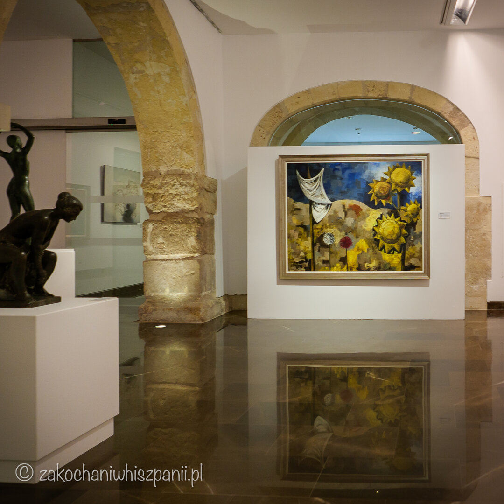
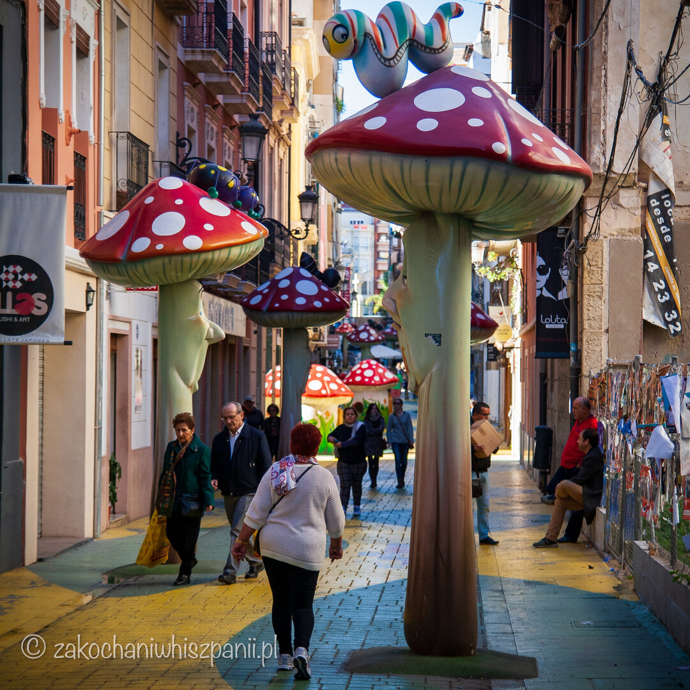
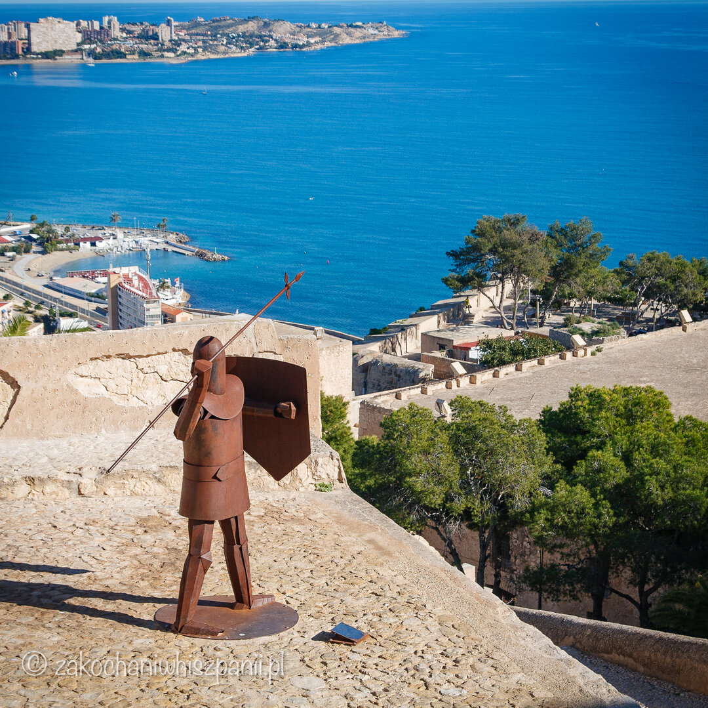
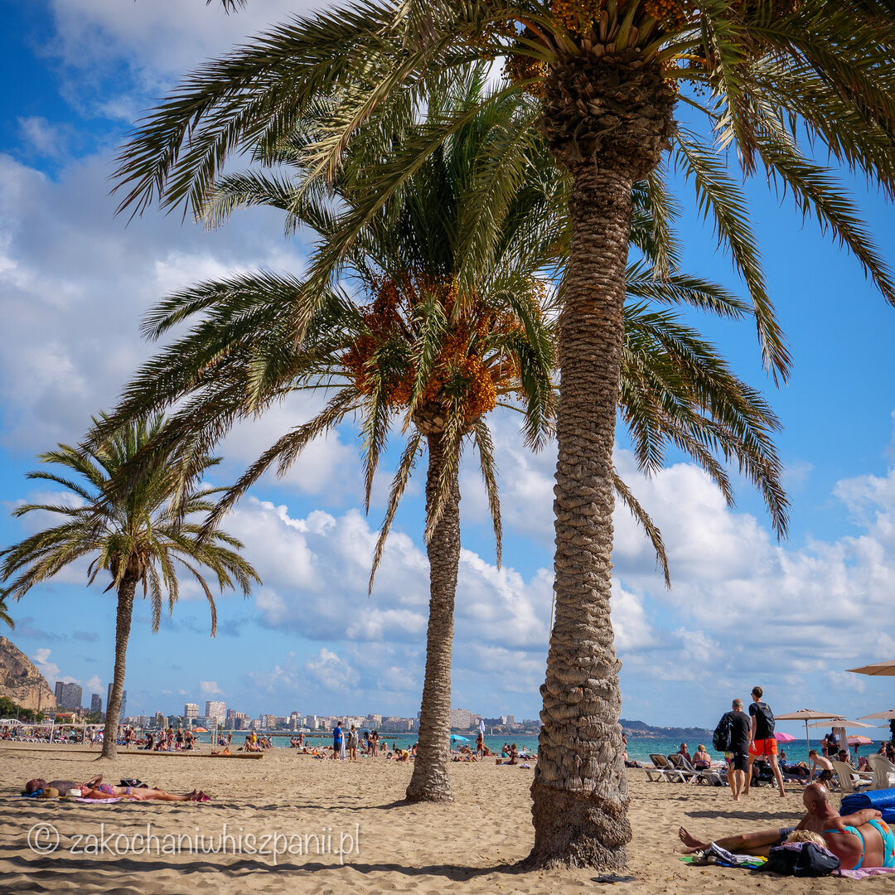
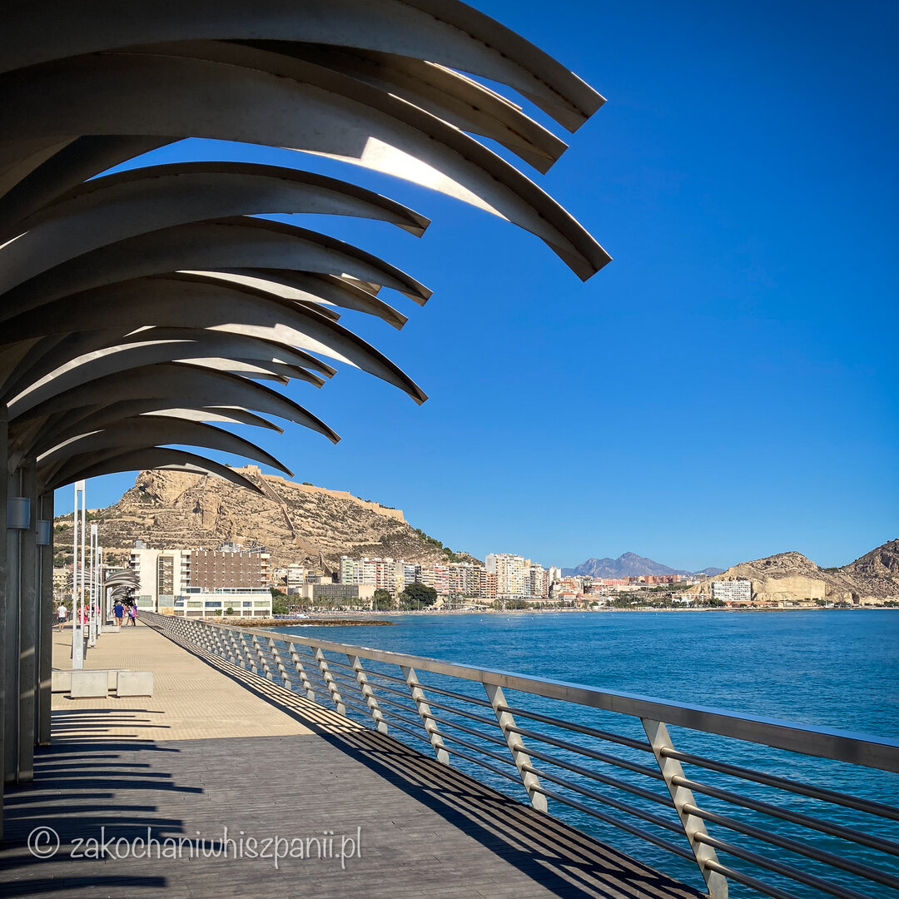
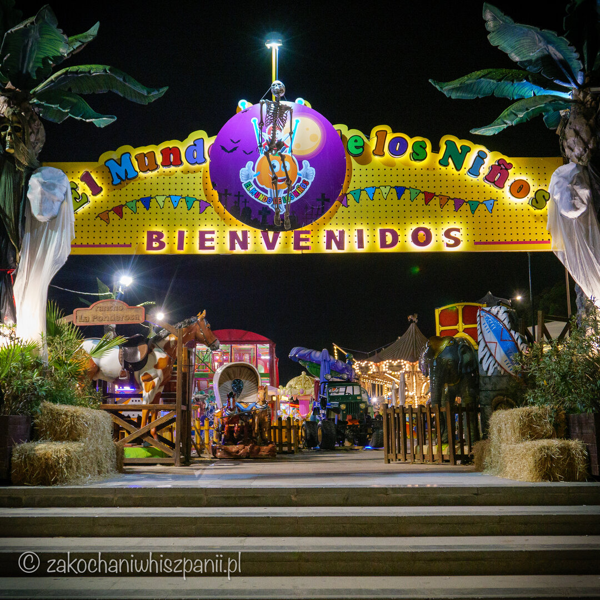
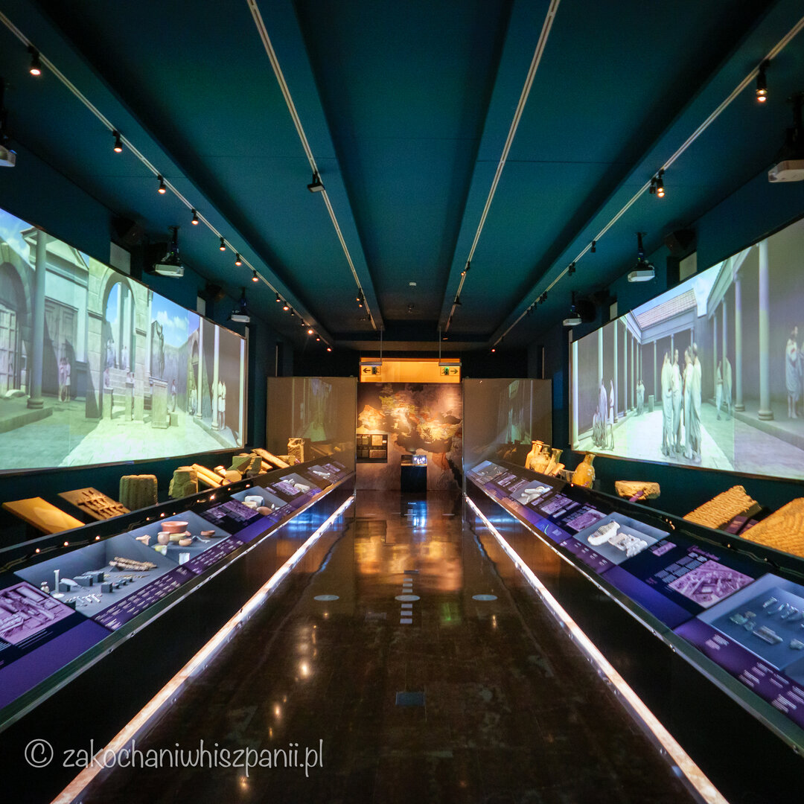

Top 10 atrakcji w Alicante, które warto zobaczyć
Alicante na weekend — co zwiedzić w kilka dni
Alicante to piękna nadmorska miejscowość, położona w regionie Costa Blanca. We wcześniejszych wpisach poruszaliśmy temat jak i czym dotrzeć z lotniska do centrum Alicante. Dziś pokażemy Ci nasze top 10 najpiękniejszych miejsc, które koniecznie musisz zobaczyć w Alicante. Na liście znajdziesz muzea, atrakcje turystyczne zarówno dla dorosłych jak i dzieci.
Barrio de Santa Cruz, najstarsza dzielnica Alicante

Białe i kolorowe domy to znak rozpoznawczy tej dzielnicy. Przypomina trochę andaluzyjskie miasteczka. Dzielnica Santa Cruz położona jest na wzgórzu, z którego roztacza się piękny widok na Alicante, oraz na pobliską plażę i morze. Najstarsza dzielnica Alicante jest idealnym miejscem na spacer, a robienie zdjęć w wąskich uliczkach to sama przyjemność.
Explanada de España, promenada z palmami w Alicante

Przepiękny deptak Explanada de España, gwarantuje Ci niezapomniany spacer ponad 500-metrową promenadą otoczoną palmami z widokiem na pobliski port. Kolorowa nawierzchnia wykonana jest z marmuru. Ciekawostką jest to, że jeden z kolorów marmuru, posiada nazwę czerwień Alicante, a to dlatego, że właśnie ten rodzaj marmuru wydobywany jest w okolicach Alicante. Pod koniec deptaka znajdziesz stoiska z rękodziełem i lokalnymi pamiątkami.
Casa Carbonell, dom Carbonell jeden z najładniejszych budynków w Alicante

Spacerując promenadą Explanada de España nie pomniesz tego obiektu. To jeden z charakterystycznych i najładniejszych budynków w Alicante. Ten imponujący gmach powstał na początku XX wieku. Przepiękna fasada budynku zwraca uwagę przechodniów. Biały pałac znajduje się tuż przy deptaku obok fontanny Puerta del Mar. Adres Passeig Esplanada d'Espanya, 1
MUBAG - (Museu de Belles Arts Gravina) Muzeum Sztuk Pięknych Gravina

Muzeum Sztuk Pięknych w Alicante mieści się przy ulicy calle Gravina, 13 – 15, w budynku pałacu z XVIII wieku. Jeśli interesuje Cię, jak w połowie XIX wieku wyglądało Alicante, jego mieszkańcy, oraz okoliczne miejscowości takie jak San Juan, czy Elche, to musisz odwiedzić to miejsce. Wstęp darmowy.
- Poniedziałek: nieczynne
- Wtorek - sobota: czynne od 10:00 do 20:00
- Niedziela i święta czynne od 10:00 do 14:00
- http://www.mubag.es/
Calle de las setas - ulica jak z bajki w Alicante

Szukasz ciekawego miejsca dla dzieci? Tu z pewnością nikt się nie nudzi, nawet dorośli. Ulica, przy której znajdziesz mnóstwo olbrzymich, prawie czterometrowych grzybów, oraz owadów. Wygląda kolorowo, bajecznie. Świetne miejsce na spacer i zabawę dla dzieci i robienie zdjęć. José María Escriva jest autorem pomysłowej ulicy grzybowej. Atrakcję tą znajdziesz przy ulicy (calle) San Francisco.
Castillo de Santa Barbara - zamek św. Barbary w Alicante

Jeśli chcesz zobaczyć widok na Morze Śródziemne, to wejście na zamek jest idealnym pomysłem. Zamek św. Barbary położony jest na szczycie góry Benacantil. Forteca ta pochodzi z czasów średniowiecznej Hiszpanii. Jeśli nie masz ochoty lub czasu wchodzić pieszo na wzgórze, możesz skorzystać z windy. Wejście na zamek jest darmowe.
Playa del Postiguet - plaża miejska w Alicante

Znajduje się obok deptaku Paseo de Explanada. Odpoczywając na plaży, dodatkowo możesz cieszyć się widokiem na Zamek św. Barbary. Przyjemna piaszczysta plaża idealna jest na spacery czy uprawianie sportów.
Na dzieci przy wejściu na plażę, czeka duży drewniany plac zabaw w kształcie łodzi. Możesz skorzystać z serwisu i wypożyczyć leżaki. Wzdłuż plaży znajdują się miejsca parkingowe. Bez problemu możesz dojechać tu komunikacją miejską: przystanek Puerta del Mar.
Paseo Volado - molo w Alicante

Ta nadmorska promenada daje niezapomniane wspomnienia. Chcesz poczuć bryzę morską, podziwiać piękne widoki na otwarte morze, port i zamek Santa Barbra? To wszystko gwarantuje spacer po molo Volado. Promenada zaczyna się w okolicy hotelu Porta Maris by Melia i ma długość ok. 500 metrów. Dokładny adres molo to Mlle. Levante, 10
El Mundo de los Ninos - park rozrywki w Alicante

Park z grami i atrakcjami na powietrzu dla dzieci i dorosłych. Znajduje się on w centrum miasta, blisko portu i parku Canalejas przy Av. Loring. Wejście do parku jest darmowe, jednak by, skorzystać z atrakcji trzeba kupić bilet.
Na miejscu czeka dwupiętrowy basen z piłeczkami, tor wyścigowy, karuzela, piłkarzyki i mini koparki. Dla dzieciaków i rodziców ekscytujące jest również łowienie kaczek. W takim miejscu nie brakuje również automatów łapiących maskotki. Z parku wychodziliśmy z dwoma nagrodami pluszakami :)
Muzeum Archeologiczne w Alicante MARQ

Muzeum działa już od 1932 roku, jednak w 2002 roku zostało przeniesione do dawnego budynku Szpitala Prowincjonalnego San Juan de Dios, w którym działa do dziś.
Wewnątrz muzeum odkryjesz wystawy, począwszy od paleolitu aż po współczesną kulturę. W tym muzeum masz okazję poznać trochę historii Alicante i okolic. Muzeum jest bardzo nowoczesne, a wystawy są interaktywne, co sprawia, że nie znudzisz się szybko. Fajne i ciekawe miejsce dla dzieci.
Informacje praktyczne
- Wstęp
- Bilet normalny 3 euro, ulgowy 1,5 euro.
- Wejście darmowe dla dzieci poniżej 8 roku życia oraz osoby niepełnosprawne.
- Od 16 czerwca do 15 września
- Wtorek - sobota: czynne od 10:00 do 20:00
- Niedziela i święta: czynne od 10:00 do 14:00
- Poniedziałek: nieczynne
- Od 16 września do 15 czerwca
- Wtorek - sobota: czynne od 10:00 do 19:00
- Niedziela i święta: czynne od 10:00 do 14:00
- Poniedziałek: nieczynne
- Adres: Plaza del Doctor Gómez Ulla s/n, 03013 Alicante
Najnowsze wpisy

Tagi